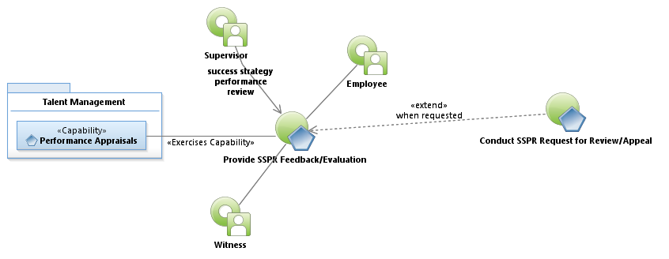
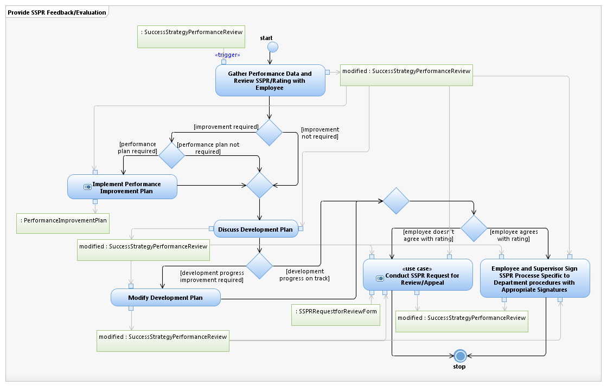
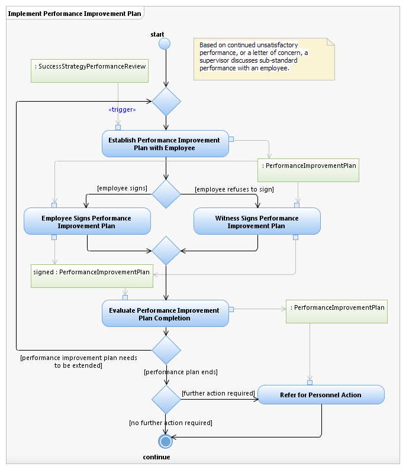

Use Case Model: Provide SSPR Feedback/Evaluation
Architect: Aaron Brown, IT Enterprise Architect Senior
Date Last Modified: 09/13/2012
User Review: Mike Hockmuller
Date: 11/27/2012
Supervisor completes the feedback, training, and potentially performance improvement SSPR Plan document for each qualified employee. The supervisor and the employee meet and discuss the feedback and sign the document indicating the meeting took place. The Supervisor documents the meeting. The feedback session may be extended by a request by the employee for further review.
Follow link to Role Definitions

Use Case Model: Provide SSPR Feedback/Evaluation
Follow link to Conduct SSPR Request for Review/Appeal

Activity Model: Provide SSPR Feedback/Evaluation

Activity Model: Implement Performance Improvement Plan